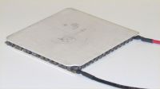
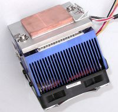

Среди нестандартных систем охлаждения можно отметить одну очень эффективную систему – на основе элементов Пельтье. Жан Шарль Атаназ — французский физик, открывший и изучивший явление выделения или поглощения тепла при прохождении электрического тока через контакт двух разнородных проводников. Устройства, принцип работы которых использует данный эффект, называются элементы Пельтье.

В основе работы таких элементов лежит
контакт двух проводников с разными уровнями энергии электронов в зоне
проводимости. При протекании тока через контакт этих материалов,
электрону необходимо приобрести энергию, чтобы он мог перейти в зону с
бОльшей энергией проводимости другого полупроводника. Охлаждение места
контакта полупроводников происходит при поглощении этой энергии.
Нагревание же места контакта происходит при протекании тока в обратном
направление.
На практике используются только
контакт двух полупроводников, т.к. при контакте металлов эффект
настолько мал, что незаметен на фоне явления теплопроводности и
омического нагрева.
Элемент Пельтье содержит одну или несколько пар небольших (не больше 60х60 мм) полупроводниковых параллелепипедов — одного n-типа и одного p-типа в паре [обычно теллурида висмута (Bi2Te3) и германида кремния (SiGe)]. Они попарно соединены металлическими перемычками, которые служат термическими контактами и изолированы не проводящей плёнкой или керамической пластинкой. Пары параллелепипедов соединены так, что образуется последовательное соединение многих пар полупроводников с разным типом проводимости - протекающий электрический ток протекает последовательно через всю цепь. В зависимости от того, в каком направлении течет электрический ток, верхние контакты охлаждаются, а нижние нагреваются — или наоборот. Таким образом переносится тепло с одной стороны элемента Пельтье на противоположную и создаётся разность температур.
При охлаждении нагревающейся стороны элемента Пельтье (радиатором или вентилятором) температура холодной стороны становится ещё ниже.
К достоинствам такой системы охлаждения можно
отнести небольшие размеры и отсутствие каких-либо подвижных частей, а
также газов и жидкостей.
Ложкой дегтя является очень низкий
коэффициент полезного действия, что приводит к большой потребляемой
мощности для достижения заметной разности температур. Если включить
термоэлектрическую пластинку без нагрузки (процессор не будет греться),
то Вы рискуете стать свидетелем интересной картины – на элементе
Пельтье, при охлаждении до точки росы, появится иней, который хлебом не
корми – дай закоротить контакты.
Так же, если элемент Пельтье выйдет из строя, то будет еще одно зрелище – из-за отсутствия контакта между радиатором (или кулером) и процессора, последний моментально нагреется и может выйти из строя.
Элементы Пельтье еще обязательно найдут широкое применение, так как без каких-либо дополнительных устройств они легко позволяют получить температуры ниже 0°C.